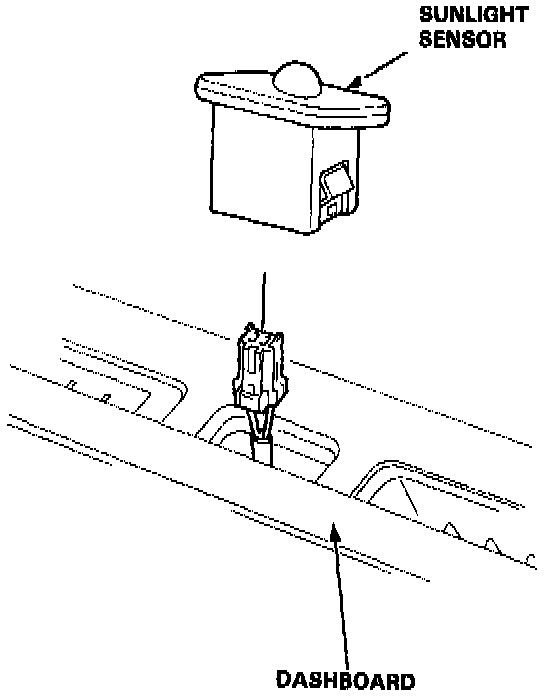

Solar Sensor: Service and Repair
Sunlight Sensor Replacement
With a small screwdriver, carefully pry the sunlight sensor out of the dashboard and disconnect its connector.
NOTE: Protect the dashboard; cover it with a shop towel before you pry against it.